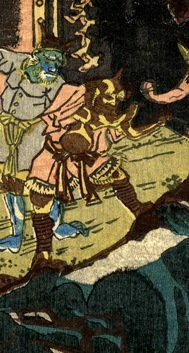

一角の鬼。体の色は茶色い。岩に足を掛け、下方を覗いている。
著作者：五雲亭貞秀／出典：親書誌：U426_nichibunken_0233：頼光大江山入；ライコウオオエヤマイリ／日付：2010／資源識別子：U426_nichibunken_0233_0002_0000
Copyright (c)2010- International Research Center for Japanese Studies, Kyoto, Japan. All rights reserved.